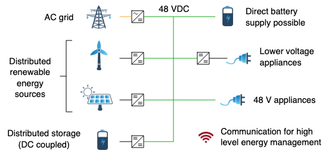
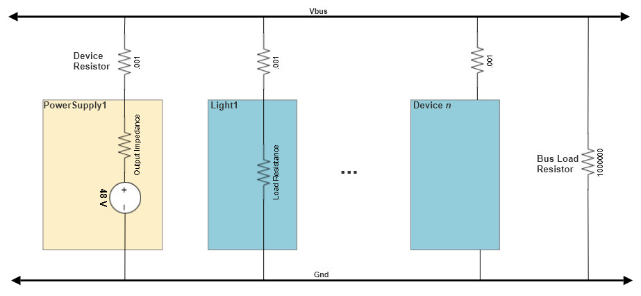

Overview
The ODG simulator is a tool for exploring the operation and management of DC microgrids as described in the Open DC Grid project.

It simulates the electrical properties of devices attached to a DC bus and includes the message flow between devices and a microgrid controller.
Electrically, the grid is modeled as a series of devices connected between a positive pole (Vbus) and a negative pole (Gnd). Each device has an internal net list consisting of resistors, voltage sources and current sources. When running a simulation, the simulator connects each device through a low-value resistor to the positive pole. It is the current through this resistor that is reported as the device current. In addition, the simulator always adds one high value resistor between Vbus and Gnd so that a power source always has some kind of load to make a complete circuit.
